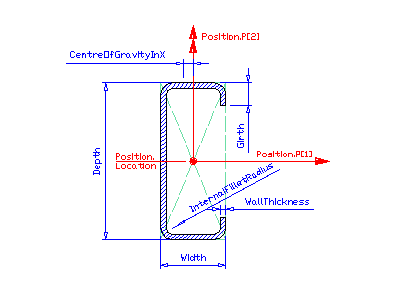

8.15.3.9 IfcCShapeProfileDef
| Définition de section d'un profil en C |
| C-Profil - parametrische Definition |
IfcCShapeProfileDef defines
a section profile that provides the defining parameters of a C-shaped
section to be used by the swept area solid. This section is typically
produced by cold forming steel. Its parameters and orientation relative
to the position coordinate system are according to the following
illustration. The centre of the position coordinate system is in the
profile's centre of the bounding box.
HISTORY New entity in IFC2x2.
IFC2x3 CHANGE All profile origins are now in the center of the bounding box.
IFC4 CHANGE Type of InternalFilletRadius relaxed to allow for zero radius.
Trailing attribute CentreOfGravityInX deleted, use respective property in IfcExtendedProfileProperties instead.
Figure 361 illustrates parameters of the C-shape profile definition. The parameterized profile defines its own position coordinate system. The underlying coordinate system is defined by the swept area solid that uses the profile definition. It is the xy plane of:
- IfcSweptAreaSolid.Position
By using offsets of the position location, the parameterized profile can be positioned centric (using x,y offsets = 0.), or at any position relative to the profile. The parameterized profile is defined by a set of parameter attributes. In the illustrated example, the 'CentreOfGravityInX' property in IfcExtendedProfileProperties, if provided, is negative.
 |
Figure 361 — C-shape profile |
XSD Specification:
<xs:element name="IfcCShapeProfileDef" type="ifc:IfcCShapeProfileDef" substitutionGroup="ifc:IfcParameterizedProfileDef" nillable="true"/>
<xs:complexType name="IfcCShapeProfileDef">
<xs:complexContent>
<xs:extension base="ifc:IfcParameterizedProfileDef">
<xs:attribute name="Depth" type="ifc:IfcPositiveLengthMeasure" use="optional"/>
<xs:attribute name="Width" type="ifc:IfcPositiveLengthMeasure" use="optional"/>
<xs:attribute name="WallThickness" type="ifc:IfcPositiveLengthMeasure" use="optional"/>
<xs:attribute name="Girth" type="ifc:IfcPositiveLengthMeasure" use="optional"/>
<xs:attribute name="InternalFilletRadius" type="ifc:IfcNonNegativeLengthMeasure" use="optional"/>
</xs:extension>
</xs:complexContent>
</xs:complexType>
EXPRESS Specification:
|
ENTITY IfcCShapeProfileDef
|
|
|
| ValidGirth | : | Girth < (Depth / 2.); | | ValidInternalFilletRadius | : | NOT(EXISTS(InternalFilletRadius)) OR
((InternalFilletRadius <= Width/2. - WallThickness) AND (InternalFilletRadius <= Depth/2. - WallThickness)); | | ValidWallThickness | : | (WallThickness < Width/2.) AND (WallThickness < Depth/2.); |
|
 EXPRESS-G diagram
EXPRESS-G diagram
Attribute Definitions:
| Depth | : | Profile depth, see illustration above (= h). |
| Width | : | Profile width, see illustration above (= b). |
| WallThickness | : | Constant wall thickness of profile (= ts). |
| Girth | : | Lengths of girth, see illustration above (= c). |
| InternalFilletRadius | : | Internal fillet radius according the above illustration (= r1). |
Formal Propositions:
| ValidGirth | : | The girth shall be smaller than half of the depth. |
| ValidInternalFilletRadius | : | If the value for InternalFilletRadius is given, it shall be small enough to fit into the inner space. |
| ValidWallThickness | : | The WallThickness shall be smaller than half of the Width and half of the Depth. |
Inheritance Graph:
|
ENTITY IfcCShapeProfileDef
|
 Link to this page
Link to this page